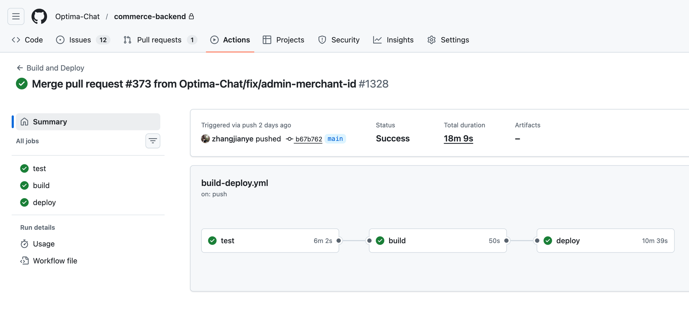
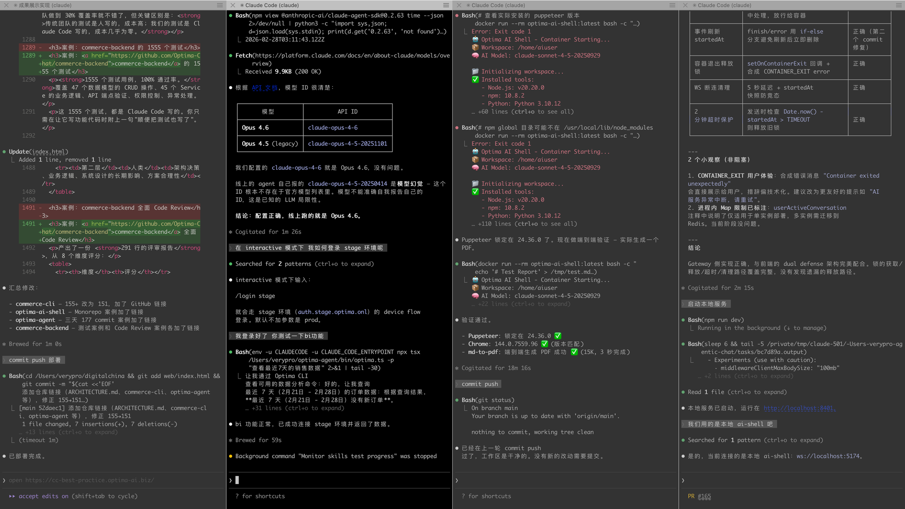
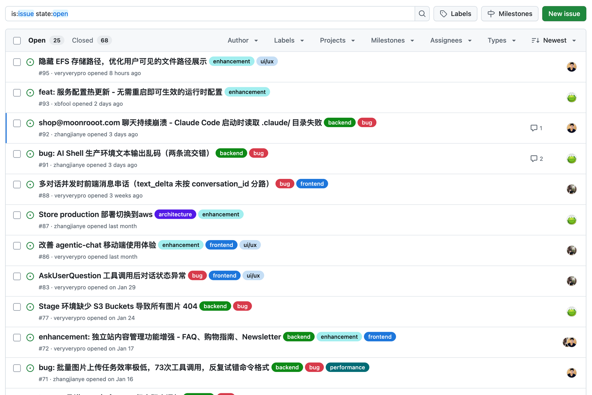
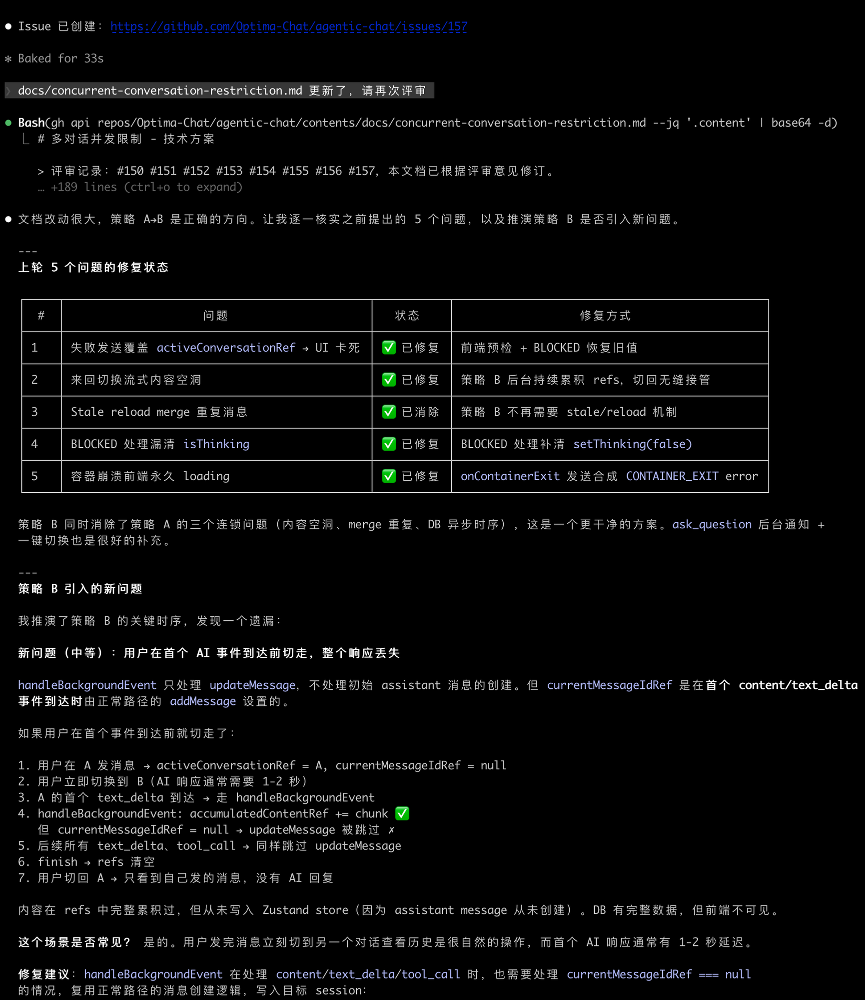
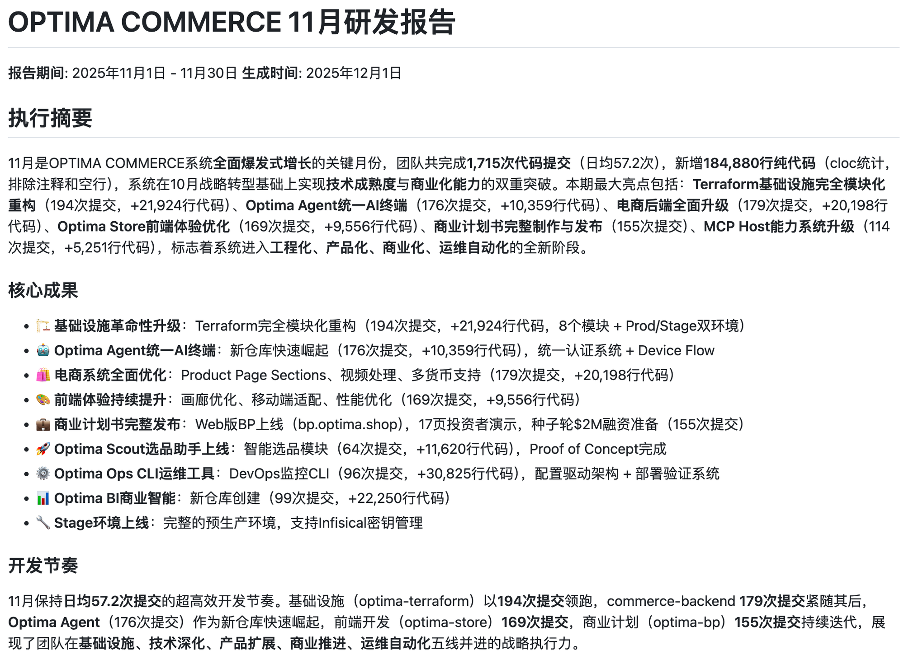
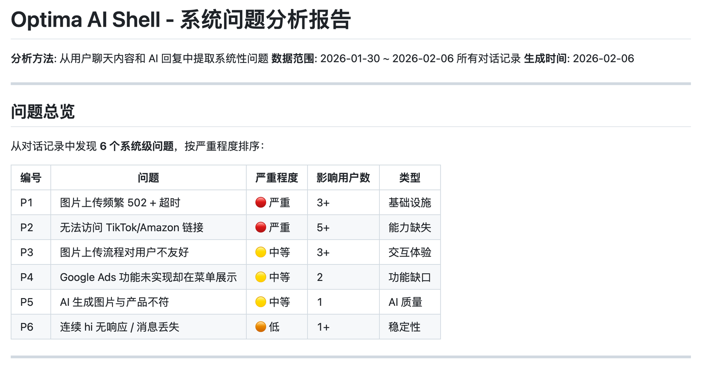

AI Native 开发最佳实践
// Part 0 — 成果展示
数据概览
3 人团队，6 个月，全程 Claude Code 开发。
我们造了什么
以下产品全部由 3 人团队 + Claude Code 完成。
系统架构
5 层分层架构，34 个仓库，从用户交互到基础设施全链路覆盖。
极限速度
Optima AI 做跨境电商 AI 平台，核心团队 3 个人，6 个月写了 126 万行代码，30 个仓库，8000 多次 commit。全程用 Claude Code 开发。
这个代码量和系统复杂度，按传统模式至少需要 20-30 人的团队。我们 3 个人做到了，靠的不是加班，而是从根本上改变了开发方式。
今天分享的不是理论，是我们踩了 6 个月坑之后总结出来的实战经验。分两部分：个人怎么用好 Claude Code，以及团队怎么围绕它协作。
AI Native 开发最大的变化，是工程师的角色从"写代码的人"变成了"做决策的人"。 学习、设计方案、审方案、理解原理、搭建工具链——这些才是人类该做的事。写代码交给 AI。
// Part 1 — 个人开发
01先学习、再做方案、再写代码
追问到能评判方案好坏
边界条件 · 验收标准
一次性通过率极高
为什么这是第一条
5000 行代码不过 30 分钟的事情。但写代码快，从来不是我们效率高的原因。真正的原因是：我们花了大量时间在写代码之前。
学习、做技术方案、审方案——这三步占了整个开发周期 70% 以上的时间。写代码反而是最短的环节。
第一阶段：学习
这是最容易被跳过的一步，也是最不应该跳过的一步。正确的做法是：先花 1-2 个小时，拿 Claude Code 当老师，上一课。
不是泛泛的问题，而是有深度的、追根究底的问题。每一个回答之后还要追问。结束的标志是：你觉得自己对这个领域的理解，已经足够去评判一份技术方案的好坏了。
极致案例：花 1 天学 AWS，产出了 41 篇文档、32,000 多行内容，覆盖 35 个 AWS 核心知识点。学习过程本身也产出了可复用的知识库。
第二阶段：做技术方案
Claude Code 缺少"边写边思考"的能力。你给它一个方案，它就照着方案写。方案里没提到的东西，它大概率不会主动考虑。必须把思考前置到方案阶段。
commerce-backend 在写任何一行代码之前，先有一份 1645 行的架构文档（ARCHITECTURE.md）。optima-business 先写了 1100 行的 TECH_SPEC.md。先有方案，再有代码。
第三阶段：写代码
方案做好了，写代码反而是最快的环节。5000 行代码 30 分钟，配合详尽的技术方案，一次性通过率非常高。
学习阶段实操建议
- 带着目标学——列出不确定的问题，一个一个问
- 追问到底——每一层回答都继续追问细节
- 要求对比——技术选型让它列对比表
- 问失败案例——"什么情况下会出问题？"
- 让它出题考你——答不上来的说明还没学透
- 沉淀成文档——让 Claude Code 整理讨论成文档
技术方案实操建议
- 不要一次让它写完整方案，先写大纲再展开
- 逐模块讨论，一个一个来
- 要求写清楚"为什么"
- 让它画图（Mermaid）
- 关注边界条件
- 给方案写验收标准
AI Native 开发中，写代码是最不重要的环节。学习和方案设计，才是你应该花最多时间的地方。
02选对工程基础设施
三个关键选择决定了效率天花板：TypeScript、Monorepo、CLAUDE.md。
TypeScript：让 AI 写的代码有静态检查
我们 30 个仓库，全部用 TypeScript。前端、后端、CLI、SDK、Lambda、基础设施脚本，无一例外。
- 训练数据量最大——Claude Code 对 TypeScript 的理解最深、一次性通过率最高
- 静态类型检查是刚需——能在编译阶段捕获大量错误，是 AI 代码质量的第一道防线
- 前后端同一种语言——类型定义共享，接口定义复用，前后端数据结构完全一致
- 生态丰富——NPM 是世界上最大的包管理器
Monorepo：让 Claude Code 看到完整上下文
Claude Code 只能看到当前仓库里的代码。Monorepo 让它自然而然就能看到所有相关代码——在写前端组件时直接去看后端的 API handler，确保请求格式完全一致。
案例：optima-ai-shell 一个仓库包含 5 个 TypeScript 包（ai-cli、session-gateway、web-ui、lambda-handler、agentcore-adapter），密切依赖，Claude Code 可以一次性改完所有相关代码。
CLAUDE.md：项目的知识库
CLAUDE.md 是你给 Claude Code 的项目说明书，决定了它对项目的理解深度。本质是把隐性知识显性化。
一份好的 CLAUDE.md 包含：项目概览、架构设计、开发约定、常见陷阱、开发部署流程、重要业务逻辑。
我们 30 个仓库几乎每个都有 CLAUDE.md。最短 148 行，最长 1062 行。commerce-cli 660 行，commerce-backend 521 行。
三个选择的效果是叠加的。TypeScript 给了类型安全，Monorepo 给了上下文共享，CLAUDE.md 给了项目知识。三者一起，质变。
03让 Claude Code 大量写自动化测试

你不知道 AI 写的代码对不对，但测试可以告诉你。在 AI Native 开发中，测试是"生存必需品"。没有测试的 AI 生成代码，就是一个黑箱。
两道防线：静态类型 + 自动化测试
| 防线 | 捕获问题 | 阶段 |
|---|---|---|
| 静态类型检查 | 参数类型不对、返回值不匹配、字段名拼错 | 编译时 |
| 自动化测试 | 业务逻辑错误、边界条件、异常处理 | 运行时 |
测试代码比例 1:1
功能代码行数和测试代码行数大致 1:1。传统团队做到 30% 覆盖率就不错了，但关键区别是：传统团队的测试是人写的，成本高；我们的测试是 Claude Code 写的，成本几乎为零。
案例：commerce-backend 的 1555 个测试
1555 个测试用例，100% 通过率。覆盖 47 个数据模型的 CRUD 操作、45 个 Service 的业务逻辑、API 端点验证、权限控制、异常处理。
这 1555 个测试，都是 Claude Code 写的。你只需在让它写功能代码时附上一句"顺便把测试也写了"。
CI 集成：测试是合并的门禁
每次 PR 提交，CI 自动执行：TypeScript 编译检查 → ESLint 静态分析 → 全量测试。三步全过，PR 才允许合并。
让 Claude Code 大量写测试，是 AI Native 开发中成本最低、收益最高的实践。不要省这个"免费的保险"。
04多开是效率的来源

| 并行度 | 日产出 |
|---|---|
| 1 开 | ~5,000 行 |
| 4 开 | ~20,000 行 |
| 8 开 | ~30,000+ 行 |
日常 4 开，忙的时候 8 开。一个仓库一个 Claude Code 实例，同时推进多个仓库的任务。
多开的三个前提
- 技术方案必须足够细——多开本质上是对前置工作质量的兑现
- 每个仓库都有好的 CLAUDE.md——相当于给多个"新员工"发同一份入职手册
- 完善的测试——没有测试的多开，就像蒙着眼睛开多辆车
案例：optima-agent 三天 177 次 commit
2025 年 11 月 28 日到 30 日，三天时间产生了 177 次 commit，单日最高 70 次。三天完成一个完整的 AI Agent 框架。
多开与技术方案的关系
方案做到 60 分，只敢单开。方案做到 80 分，可以 2-3 开。方案做到 95 分，可以 6-8 开。你在技术方案上花的每一分钟，都在为多开创造空间。
3 个人写 126 万行代码，不是超人式的努力，是并行化带来的数学必然。
05要充分理解代码原理
定位可疑区域
原因和修复方案
判断假设是否合理
写代码修复
126 万行代码，我看过的不到 1%。但每个模块做什么、模块之间怎么交互、数据怎么流转、关键设计决策是什么，这些我都很清楚。这就够了。
"理解原理"意味着什么
- 知道架构和数据流——系统有哪些组件，它们之间怎么通信
- 知道设计决策背后的原因——为什么选 WebSocket 而不是 SSE？
- 知道每个组件的失败模式——WebSocket 断连、数据库超时、消息队列积压
- 不需要知道每一行代码——126 万行代码看不完，也不需要看完
核心 Debug 模式
案例：AI Shell 消息推送乱序
Claude Code 诊断为"网络延迟导致乱序"。但我了解架构——WebSocket 单连接、TCP 保序，网络延迟假设说不通。真正原因是异步数据库写入的顺序问题。给出正确方向后，十几分钟修复。
一个正确的方向性建议，抵得上十次错误的代码修改。人类的核心价值是方向判断。
// Part 2 — 团队协作
06CLI First：给 AI 和人类设计同一套工具

如果 AI 不能用，那就不算设计好了。CLI 是 AI 最自然的操作接口——文本进、文本出，跟 AI 的工作方式天然匹配。
commerce-cli：19 个模块，151 命令
封装了整个电商系统的所有操作能力。product、order、inventory、shipping、collection、variant、review、homepage、i18n、auth、refund、merchant、transfer、checkout、easyship…
# 人类在终端里操作
optima order get ORD-12345 --pretty
optima product list --status active --pretty
# AI Agent 自动运营
optima i18n product create --product-id 12345 --locale zh-CN
optima refund approve REF-67890同一套命令，两种用户，零额外开发成本。
双输出设计
默认 JSON（AI 用），--pretty 人类可读。一个小改动，AI 使用同样命令时 token 消耗直接减少 50% 以上。
架构演进：从 MCP 到 Agent + CLI
早期用 MCP 协议，但发现每个能力要实现两次。155+ 个操作维护两套接口不可接受。关键决策：砍掉 MCP 层，全部走 CLI。
每个新系统能力都应该问："AI 能不能直接用？"如果不能，设计就需要重新考虑。
07做团队自己的 Dev Skills

CLAUDE.md 是随身带的笔记本。Skills 是办公桌抽屉里的操作手册，需要的时候才拿出来翻。按需加载的知识文件。
6 个自定义 Skill
| Skill | 行数 | 功能 |
|---|---|---|
| logs | 205 | 通过 CloudWatch 查看服务日志（CI/Stage/Prod） |
| query-db | 211 | 查询数据库，自动管理 SSH 隧道 |
| generate-test-token | 331 | 自动注册测试账号、走 OAuth 流程、拿 Token |
| show-env | 185 | 通过 Infisical 查看环境变量 |
| use-commerce-cli | 64 | commerce-cli 使用说明 |
| read-code | 207 | 跨仓库读取代码（GitHub API） |
实战案例："Stage 的商品 API 返回 500"
开发者只说了这一句话。Claude Code 自动：查日志 → 发现 Database connection timeout → 查配置 → 发现 max_connections 过小 → 给出修复方案。全程全自动。
分发机制
npm install -g @optima-chat/dev-skills@latest一行命令搞定。NPM 包的 postinstall hook 自动复制 Skill 文件到 ~/.claude/。
Dev Skills 的本质：把"怎么操作"从人的记忆搬到 AI 的能力里。机构知识的编码化。
08充分利用 GitHub Issues 和 PR

团队成员之间的技术沟通，很大程度上是通过 Claude Code 写的 GitHub Issues 来完成的。Claude Code 永远不会偷懒。每个 issue 都像一份完整的技术报告。
跨仓库沟通
A 仓库的 Claude Code 发现了 B 仓库的问题，直接通过 gh 命令在 B 仓库创建 issue，把所有技术细节写进去。B 仓库的 Claude Code 打开 issue，直接开始修复。
真实案例
- Issue #33（23 个命令缺失）——Claude Code 自动对比 MCP 和 CLI 功能，发现 23 个缺失。同一天 PR #34 提交：17 个 commit、45 个文件、+4202 行代码。一天之内闭环。
- Issue #9（AI 输出格式优化）——Claude Code 发现表格格式浪费 50% 以上 token，推动了默认 JSON + --pretty 的设计决策
- Issue #94（跨仓库 JWT 错误）——在 hub 仓库发现问题，根因在 backend。Claude Code 自动创建跨仓库 issue 传递完整上下文
Issues + PR 变成了一个自动维护的知识库。不需要额外的文档写作工作，知识沉淀是开发流程的副产品。
09让 Claude Code 做 Code Review

两层审查
| 层级 | 审查者 | 审什么 |
|---|---|---|
| 第一层 | Claude Code | 测试覆盖、安全问题、性能问题、代码风格、错误处理 |
| 第二层 | 人类 | 架构决策、业务逻辑、系统设计的长期影响、方案合理性 |
案例：commerce-backend 全面 Code Review
产出了一份 291 行的评审报告，从 8 个维度评分：
| 维度 | 评分 |
|---|---|
| API 设计 | 9/10 |
| 数据库设计 | 9/10 |
| 测试覆盖 | 9/10 |
| 国际化 | 8.5/10 |
| 服务架构 | 8/10 |
| 安全性 | 7.5/10 |
| 错误处理 | 7.5/10 |
| 性能 | 6.5/10 |
还给出了三阶段修复计划：立即修复（安全）→ 1-2 周（性能）→ 3-8 周（架构优化）。
让贵的人做贵的事，让 AI 做重复的事。 Code Review 不再是做不做的选择题，它应该是每个团队的标配。
10充分利用 Claude Code 的文档能力

当一个东西的成本从"一周"降到"几小时"，你对待它的态度就应该变。
Claude Code 擅长写的文档
- 架构文档——60KB 覆盖 30 个仓库的完整架构（OPTIMA_COMMERCE_ARCHITECTURE.md），含 Mermaid 图
- 月报——自动分析 325 次 commit、14 个活跃仓库，产出结构清晰的技术月报
- 技术 RFC——753 行的并发对话串台问题 RFC，经 5 轮评审通过
- API 文档和新人引导——从零到卖货的完整 Getting Started Guide
- 学习文档——41 篇 AWS 学习文档，学习过程自动产出知识资产
文档和 AI 的正循环
好的文档 → 更好的 AI 理解 → 更好的代码和文档产出 → 更好的文档。你选择进入哪个循环，直接决定了团队使用 AI 的效率上限。
把文档当作基础设施来投资，而不是当作成本来控制。在 AI Native 开发的世界里，文档不是负担，是杠杆。
11用 Claude Code 做 BI 分析

传统 BI vs Claude Code BI
| 传统 BI | Claude Code BI | |
|---|---|---|
| 定量分析 | DAU、转化率、Token 消耗 | 同上 |
| 定性分析 | 做不了 | 从对话记录提炼系统问题、用户画像 |
| 回答的问题 | "发生了什么" | "为什么发生" |
系统问题分析
分析 9 个对话、10 位用户，发现 7 个系统问题。每个问题都有具体错误信息、涉及用户、根因分析和改进建议。
用户画像
Claude Code 读完每个用户几百条对话后理解出用户画像——重度运营用户、单品类深度研究型、新卖家冷启动型。这些不是从数据库字段拼的，是理解出来的。
传统 BI 告诉你"DAU 下降了 23%"，Claude Code 告诉你为什么。相当于每周做一次全面的用户调研，成本几乎为零。
// 附录
12常见问题与局限

踩过的坑
- 不做方案直接让 AI 写——改了五六轮推倒重来，技术方案做好后 30 分钟一次通过
- 多开合并冲突——两个实例改了同一个公共模块，花了大半天理清。教训：公共模块只能由一个实例修改
- "看起来对但逻辑错"——复杂业务规则（退款涉及库存回滚、运费退还、优惠券恢复），AI 可能漏掉其中一步
关于代码质量
AI 生成代码的可维护性，高度依赖于技术方案的质量和测试的覆盖率。方案做得好、测试写得全，代码质量不比人写的差。方案粗糙、没有测试，代码质量会比人写的更差。
存量系统怎么用
Claude Code vs Copilot
| Copilot/通义灵码 | Claude Code | |
|---|---|---|
| 模式 | 自动补全 | Agent |
| 角色 | 人在写，AI 加速 | AI 写，人审方案和结果 |
| 提升 | 快 30-50% | 从"写代码"中解放出来 |
| 多开 | 不可能 | 4-8 个实例并行 |
数据安全
| 层级 | 方案 | 适合场景 |
|---|---|---|
| 第一层 | AWS Bedrock 云端隔离 | 大部分企业项目 |
| 第二层 | OpenCode + Kimi K2 本地部署 | 政府、金融等涉密场景 |
| 第三层 | 混合方案 | 按项目敏感度灵活选择 |
知识产权
中国法院认定：AI 生成内容如果体现了使用者的独创性贡献，使用者享有完整著作权。"先学习、做方案、审方案、再让 AI 写代码"的流程，天然就是大量人类智力投入的证据。
供应商依赖
11 条实践中大部分不依赖特定工具。核心资产沉淀在 CLAUDE.md、测试、文档、Issues/PR 里——这些都是标准格式的文件，不绑定任何工具。OpenCode 是成熟的开源替代。